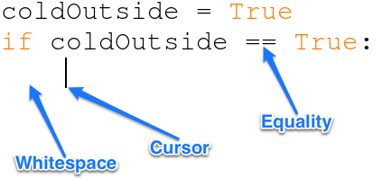
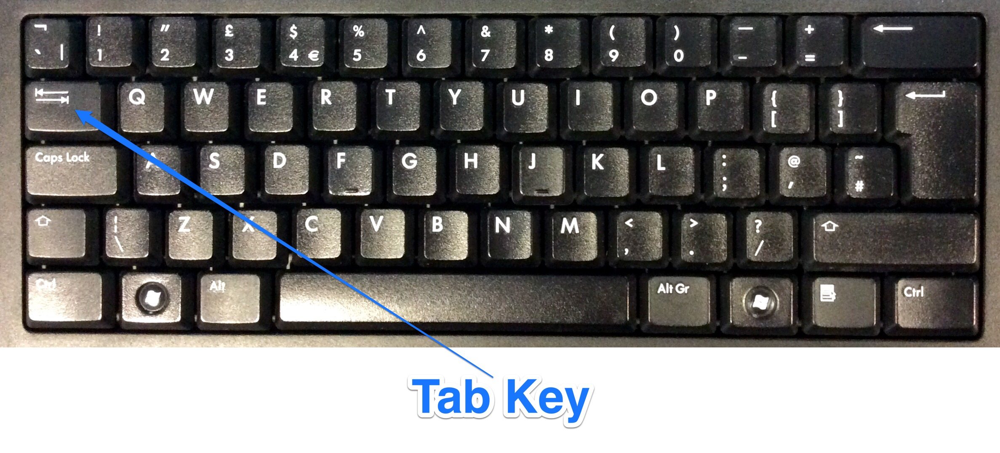

Touring Turing
1 What is 'Conditional Selection'
Learn It
- One of the important aspects of a Turing machine, is the ability to change the tape, depending on what was written on some programmed cards.
- So, for instance, if the Turing machine was at box 500 on the tape,
ifthe symbol written there was a 1 - it would leave it and move to the next box.elseif the symbol that was written there was a 0 the erase it and write in a 1, before moving on to the next box.
Learn It
- This is know as
Conditional Selection. - If you want to imagine using
Conditional Selectionin real life, think about a simple decision you might make before leaving the house in the morning.
If it is cold I will take my coat, else I'll leave it at home.
Code It
- Let's try and code the above example using python.
- Open IDLE and create a new script (
Ctrl+n) calledcoat.py - We need to start by creating a variable to store whether it is cold or not.
- On the first line of your script write the following line.
coldOutside = True
Trueis a type of data in Python.- Now we're going to start our conditional selection. Write this line next.
if coldOutside == True:
- The double equals is known as a
test for equality. In Python a single equals is used for assigning variables. A double equals tests if two things are the same. - The
:is important. It tells the computer that we have finished stating thecondition. In this case thatcoldOutside = True - Now hit
Enteron your keyboard and stop.

- The cursor has automatically been placed 4 spaces in, leaving what is known as
significant whitespacewhere you are going to write your next line. - If you accidentally delete the whitespace (do it now), you can add it back in by using the
Tabkey on your keyboard.

- Let's write the next line
if coldOutside == True: print('You had better take your coat')
- Because the
print()statement is written after the significant white space, it will only be executed if the line above it isTrue. - What happens if coldOutside isn't
True? - We need to prepare for that as well.
if coldOutside == True: print('You had better take your coat') else: print('Leave your coat at home')
- Notice that the
else:has no whitespace before it. - The
print()statement under theelse:condition, only runs ifcoldOutsideis notTrue Ctrl+sand thenF5to save and run your script.- Now try changing the variable
coldOutsidefromTruetoFalse
Badge It - Silver
- Now it's your turn to write some conditional selection scripts. Make sure you use sensible variable names
- Try the following:
- Write a script that prints out whether you should have a snack based on whether you are hungry or not.
- Write a script that prints out whether you should have a sleep or not based on whether you are tired or not.
- Write a script that prints out whether you should take a bus or not based on whether your journey is a long one.
2 More tests
Learn It
- We can use conditional selection to test for pretty much anything, not just whether a variable is
TrueorFalse. - We can test the value of any variable value we like.
Code It
- Let's make a little chatbot.
name = 'Alice' if name == 'Alice': print('Nice to meet you ' + name) else: print('I wanted to speak to Alice, not ' + name)
- We can make this script a little more interactive by using
input()like we did in the previous lesson
name = input('Hi, what is your name? ') if name == 'Alice': print('Nice to meet you ' + name) else: print('I wanted to speak to Alice, not ' + name)
- You can change what the script replies if you like.
- Let's extend it a little. Add a second block of conditional selection to your script, underneath the first.
pets = input('Do you have any pets? ') if pets == 'yes': print("That's nice. I love pets") else: print("That's a shame. You should buy a dog")
- Add a few more questions and responses of your own, to extend the chatbot.
Badge It - Gold
- We can use Conditional Selection to make a quiz.
- Have a look at the script below.
score = 0 userAnswer1 = input('What is the capital city of England?' ) if userAnswer1 == 'London': print('Correct') score = score + 1 else: print('Incorrect')
- The first line creates a variable called
scoreand sets it to 0 - This line
score = score + 1
- adds 1 to the score. As it has whitespace before it, it only runs when the user gets the answer correct.
- Add 9 more questions to your script.
3 Type Casting again
Learn It
- It would be nice if we could print out the score at the end of the quiz.
- There's a slight problem though.
- Try this as the last line of code.
print('You scored ' + score)
- Run through the quiz and see what happens.
- The problem is the same as we experienced in the last lesson. The string ='You scored '= and the integer
scoreare different types, and you can'tconcatenatedifferent types in Python (Do you still remember whatconcatenatemeans). - This time we'll use the inbuilt function
str(). - This converts numbers to strings. So if the score was
6it would convert it to '6' - Change your last line of code so it looks like the one below.
print('You scored ' + str(score))
Code It
- Can you remember how to use int() to change a user's input into a number.
- We could add some Maths questions to our script by using int()
- Here's an example question, and the beauty of it is that we don't have to work out the answer ourselves.
answer6 = int(input('What is 7 multiplied by 8? ')) if answer6 == 7*8: print('Correct') score = score + 1 else: print('Incorrect')
Badge It - Platinum
- Now try adding 3 simple Maths questions to the quiz (addition, multiplication, subtraction or division (+,*,-,/))
- Add another question 3 questions that asks the user to answer the same questions you answered for the The Platinum Badge on Week 1